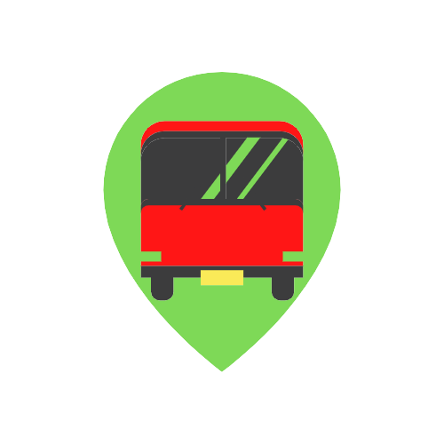
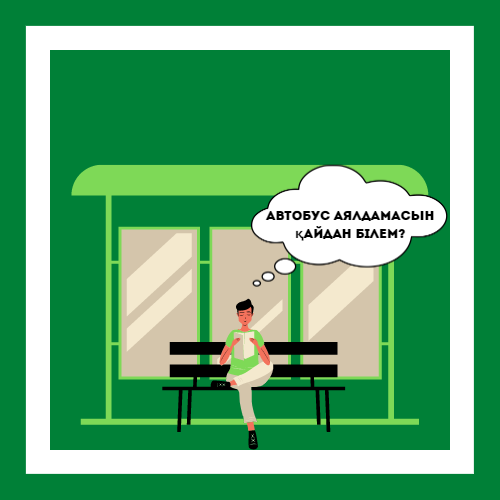

GeoTranspart - бұл дегеніміз кез келген Алматы қаласының тұрғындарына кез келген уақытта көмектесе алатын проект болып саналады. Қазіргі танда, гео локациясыз жүру мүмкін емес деп санаймын, себебі барлық адам , гео локацияға қарап жол түзеуге үйреніп қалған. Сол себепті мен , осы проекті жасауды ұйғардым. Кез келген адам сайтқа кіріп өзіне керек автобустын, кандай жолда жүретінін сонымен қатар кез келген автобустын аялдамасын көріп біле алады. Осылайша мен кез келген адамнын уақытын үнемдеп сонымен қатар адасып қалмауына көмектесе аламын.

Алматы қаласының тұрғындарына көмектесу. Яғни қоғамдық көліктердің маршруттарын көрсету, аяладама атаулары мен қоғамдық көліктердің жүру уақытын көрсету.

Проектің пайда болуы, Stepik платформасы көмектесті, себебі сол платформанын курстарын өту арқылы мен сайттын қалай жасалатынын үйрендім. Яндекс порталы , өз картасын ұсыну арқылы көмектесті. Көп теген элементтер мен басқада дизайндарды әрлеу үшін htmlbook сайтынында көп көмегі тиді. Сонымен қатар П3-20К тобының баллары мен практика басшысы Нұржан ағайдын қолдауларына көп рақметімді айтамын.
Мен Кадырбек Диас Толқынбекұлы, IT колледждің 2 курс студентімін. 9 сыныптан кейін колледжге кетуді ұйғарған болатынмын, осылайша Алматы қаласындағы ең үздік IT колледжіне тапсырдым. Қазіргі танда мамандығыма байланысты көп болмасада біраз уйренгендерім бар. Python , HTML , CSS сияқты тілдерді білемін. Осылайша өзімді программист ретінде санай аламын. Әрине көп білмесемде, қазір өзіме керек дүниелерді білемін. Бастапқыда бұл проекті бастап маған мүмкін емес сияқты көрінген болатын. Күннен күнге жұмысымның өз ойлағамдай болып жатқанын көргенде, шынымды айтсам өзіме өзім қуана бастадым. Күнделікті қолдаулардын арқасында , ағайдын сенімінін арқасында, күннен күнге проектім ұлғая түсті, казіргі кезде проектім ең үздік проектердің бірі деп санай аламын өз басым.